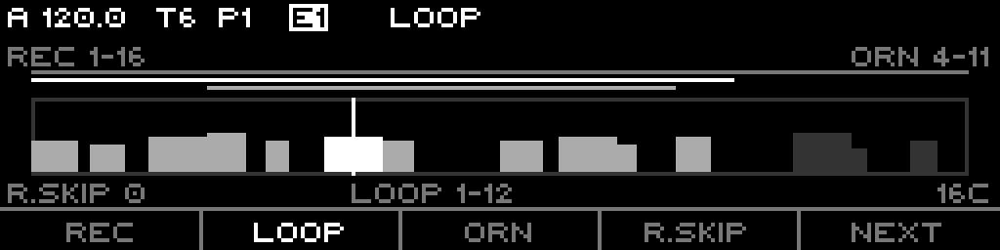
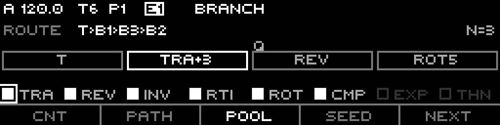
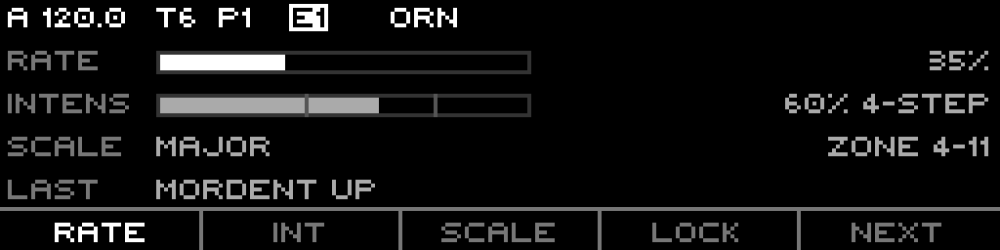
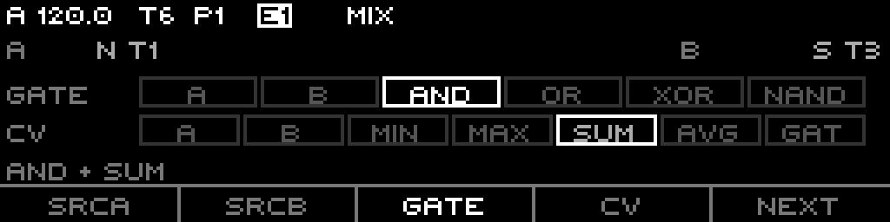

A section-sampled CV/gate looper. Capture one or two source tracks, then reshape the loop with composable branches and ornaments.
The Fractal track does not generate notes of its own — it watches one or two other tracks (or routing channels), summarizes what they emit over each loop section into a compact buffer (the trunk), and replays that captured loop. On top of the trunk you stack two composable layers: branches (chained transforms of the trunk that play after it) and ornaments (scale-snapped flourish notes injected inside a section). You record once, then reshape forever without re-touching the source.
Everything here is grounded in the firmware as built — defaults, ranges, enum members, key bindings, and step-grid maps come from the model, engine, and UI code.
A Fractal track has no sequence data of its own in the usual sense. Instead it:
The three layers stack:
It is a sampler/looper, not a stochastic or algorithmic note source. Everything it plays traces back to what it captured.
Each source slot (SrcA, SrcB) selects one of three kinds:
With both slots set, the parents combine through two independent logic stages.
Gate logic (GATE) | Result |
|---|---|
| A | source A gate |
| B | source B gate |
| And | A and B |
| Or | A or B |
| Xor | A xor B |
| Nand | not (A and B) |
CV logic (CV) | Result |
|---|---|
| A | source A CV |
| B | source B CV |
| Min | min(A, B) |
| Max | max(A, B) |
| Sum | A + B |
| Avg | (A + B) / 2 |
| Gated (Gat) | whichever slot just fired, A-priority |
With only one slot set, that slot passes through alone (no mix). The classic "A=CV, B=Gate" tailoring is just CV=A + GATE=B.
Rec Muted taps the parent's pre-mute intended gate. With it on, the Fractal track keeps capturing a source even while that source is muted — a silent rehearsal you record from without hearing the parent.
| Param | Members | Default | Effect |
|---|---|---|---|
| Capture (cadence) | Section, Event | Event | Section commits one cell per loop-section boundary; Event commits on the parent's hysteretic note-change |
| Fidelity | Quantized, Feel | Feel | Quantized holds the last CV sample, discards onset; Feel S&Hs CV at the first rising edge and keeps the onset phase |
Gate length is always proportional: gate-high ticks over total section ticks become a 4-bit gate length (0 = rest, 15 = tie). Feel additionally stores the onset nibble — when in the section the gate first fired — so playback reproduces the original feel.
recordTrigger, per sequence) is the arm. Capture runs only when armed, the track is not locked, and a source is set. Routable.recordSkip, 0-15) packs capture: skips that many sections between writes, and written cells pack consecutively (R.Skip 1 writes half as many cells over the same span).Capture writes into the record zone (recF..recL); the record cursor wraps within it.
The trunk buffer holds up to bufferLength cells (default 16, max 128). Three brackets carve it up and must nest:
recordFirst ≤ loopFirst ≤ ornFirst ≤ ornLast ≤ loopLast ≤ recordLastMoving an outer edge pushes the inner edges it would cross; moving an inner edge clamps against its outer neighbour. The invariant is always enforced.
bufferLength clamps every pattern's loop/record/orn edges down to fit the new last cell.The Trunk page draws the buffer as a horizontal tape. Each captured cell is a filled bar: height = pitch (±5 octaves mapped into the tape), width = gate length (0..15 of the cell width). Cells inside the loop window are brighter; the sounding cell is brightest. A vertical playhead marks the read position. Above the tape, three thin lines show the rec / loop / orn zones stacked top-to-bottom, the focused bracket drawn bright.
A branch is one chained transform of the trunk, derived deterministically from a seed. branchCount (0-7) branches play one after another, concatenated after the trunk, so the global walk is trunk → B1 → B2 → … Each branch reads the previous segment and applies its transform on read; the trunk buffer is never mutated.
| # | Label | Op | Param |
|---|---|---|---|
| 0 | Tra | Transpose | ± a fixed interval: P4 (5), P5 (7), or octave (12) |
| 1 | Rev | Reverse | reads the segment backwards |
| 2 | Inv | Inverse | mirrors pitch around the loop-start cell |
| 3 | RtI | Retrograde Inverse | reverse + invert |
| 4 | Rot | Rotate | shifts read position by an offset (1..loopLen-1) |
| 5 | Cmp | Compress | scales intervals around centre by ×0.5 or ×0.67 |
| 6 | Exp | Expand | scales intervals around centre by ×1.5 or ×2.0 |
| 7 | Thn | Gate-thin | periodically rests every Nth cell (N = 2..4), CV untouched |
branchCount, 0-7, routable) — how many branches play.path, 0-255 bit-word, routable) — read order. Each path bit flips a branch between outward (walked ascending after the trunk) and held (walked descending after the outward ones). The Branch page prints the resolved order as T>B1>B2…branchPool, 8-bit mask) — which of the 8 transforms the seed may draw from. Empty pool falls back to all-Transpose.branchSeed) — the deterministic draw. Same seed + pool + loop length always yields the same chain. F4 (SEED) reseeds to a fresh random value.On the Branch page the top step row queues a beat-synced jump to a segment: it applies at the next section boundary. The playing block shows a bright border; a queued target shows a Q.
Ornaments inject short, scale-snapped flourish notes inside a section. They are probabilistic and live — rolled per eligible cell from a free-running PRNG. The trunk stays raw; ornament notes snap to the sequence scale on the way out.
| # | Name | Tier |
|---|---|---|
| 0 | Anticipation | 2-step |
| 1 | Suspension | 2-step |
| 2 | Syncopation | 2-step |
| 3 | Octave-Up | 2-step |
| 4 | Fifth-Up | 2-step |
| 5 | Half-Turn Toward | 2-step |
| 6 | Half-Turn Away | 2-step |
| 7 | Run Toward | 4-step |
| 8 | Run Away | 4-step |
| 9 | Turn | 4-step |
| 10 | Arp Toward | 4-step |
| 11 | Arp Away | 4-step |
| 12 | Mordent Up | 4-step |
| 13 | Mordent Down | 4-step |
| 14 | Trill | trill |
ornamentRate, 0-100%, routable) — probability an eligible cell fires an ornament at all. 0 = never.ornamentIntensity, 0-100%, routable) — which tiers are in the draw pool:
The Ornament page labels the slider with a tier readout (off / 2-step / 4-step / 8-trill); the underlying eligibility uses the thresholds above.
LOCK freezes the ornament roll. While locked, every firing repeats the last-fired ornament and its realized shape (direction + lookahead) instead of re-adapting per cell. Capture is also blocked while locked. Toggle it with F4 (LOCK) on the Ornament page, or Shift+F1 on any hero page.
The Ornament page step row queues a forced ornament: it ignores rate, zone, and lock, and fires on the next gated cell. A queued ornament reads Q <name>, the last fired reads Last <name>. Consecutive ornament notes leave a one-tick retrigger gap so each note re-articulates.
| Mode | Reads |
|---|---|
| Fwd (Forward) | 0, 1, 2, … |
| Rev (Reverse) | last, …, 1, 0 |
| Pend (Pendulum) | forward then back |
| Rand (Random) | random within the window |
| Conv (Converge) | 0, last, 1, last-1, … inward |
| Div (Diverge) | centre outward |
| Page | 4-cell pages, interleaved |
Forward/Reverse/Pendulum/Random map to the shared sequence run-mode state; Converge/Diverge/Page advance linearly and remap the read index.
Quantize is a playback-only snap: Raw (default) plays the captured pitch literally; On snaps the main note to the sequence scale. Trunk storage stays raw either way. Ornament flourishes always snap to their own scale regardless.
Delay (trackDelay, 0-16 sections) shifts the resolved main note that many sections later through a fixed ring — a canon/echo against the source. Only the note is delayed; ornaments are re-rolled fresh when the delayed entry surfaces.
Page+S0 opens the hero ring: one page object cycling Trunk → Branch → Ornament → Source via F5 (NEXT). Shift+F1 toggles Lock on any of them. The context menu offers INIT (clear sequence params), CLEAR BUF (erase the recorded loop), COPY, PASTE.
Holding Page + S9-S16 opens a quick-edit overlay for, in order: Rec First, Rec Last, Loop First, Loop Last, Orn First, Orn Last, Orn Rate, Orn Intensity. Page + any other step exits.

F1 REC / F2 LOOP / F3 ORN focus that bracket for the encoder; F4 R.Skip focuses R.Skip. The encoder nudges the focused edge by ±1 (Shift = the bracket's last edge). Step keypad — top row S1-8 adds, bottom row S9-16 subtracts:
| Col | S1-8 (top, +) | S9-16 (bottom, −) |
|---|---|---|
| 1 | Rec First +8 | Rec First −8 |
| 2 | Rec Last +8 | Rec Last −8 |
| 3 | Loop First +8 | Loop First −8 |
| 4 | Loop Last +8 | Loop Last −8 |
| 5 | Orn First +8 | Orn First −8 |
| 6 | Orn Last +8 | Orn Last −8 |
| 7 | R.Skip +1 | R.Skip −1 |
| 8 | Divisor (faster) | Divisor (slower) |
All edge moves are nesting-clamped. On the Divisor column top = faster (lower divisor value). LEDs: top row dim green (+), bottom row dim red (−).

F1 CNT / F2 PATH / F4 SEED focus for the encoder (SEED also reseeds on press). F3 POOL selects the pool layer; an encoder click toggles the focused pool bit. Steps: top row S1..S(N+1) queues a beat-synced jump to that segment; bottom row S9..S16 toggles the 8 transform-pool bits.
LEDs: top row — present segment dim green, playing bright amber, queued bright red. Bottom row — pool bit set = bright green.

F1 RATE / F2 INT / F3 SCALE focus for the encoder; F4 LOCK toggles Lock. Steps S1-S15 queue a forced ornament (id 0-14), ignoring rate and zone. S16 is inert.
LEDs: S1-S15 — slot dim green, last-fired dim red, queued bright amber.

F1 SrcA / F2 SrcB focus the slot; F3 GATE / F4 CV focus the logic row. Steps: top row S1-S6 selects the gate-logic mode; bottom row S9-S15 selects the cv-logic mode; S16 randomizes both logics.
LEDs: selected mode bright green, other modes in the row dim green; S16 bright amber.
Track-wide params, hosted by the generic Track page:
Per-pattern params: Loop First, Loop Last, Order Mode, Divisor, Clock Mult, Reset Measure, Rec First, Rec Last, Rec Mode, Rec Skip, Record (arm), Orn First, Orn Last, Orn Rate, Orn Intens, Capture (cadence), Fidelity, Scale, Root Note, Scale Rotate.
Only these Fractal params are routing targets — all per-sequence:
branchCountpathornamentRateornamentIntensityrecordTrigger (record arm)(Scale and Root Note also route through the shared scale targets.) No track-scope Fractal param is routable.
The hero-page step grids give four hands-on, beat-synced performance controls without leaving the edit page: